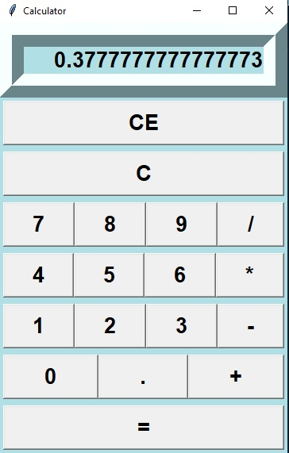
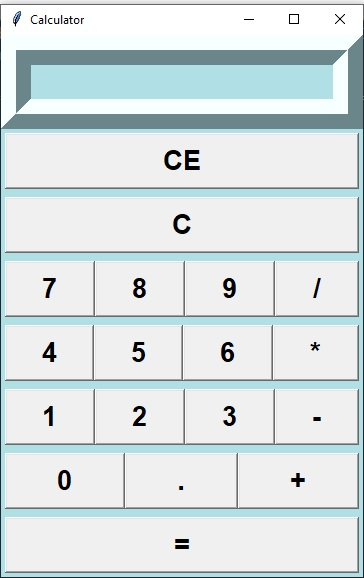

1. Once you run the program in IDLE you come across the below screen, which is a standard calculator. You can perfrom desired operations on the below calculator a shown.
2. As soon as you click on "=" it will give you the result of the above expression or any other expression if entered.
3. You can also clear the whole screen using "C"/"CE" button as the demo below.
